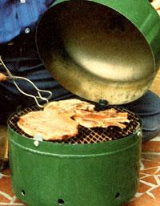

Few meals are as downright satisfying as those that feature food cooked "barbecue style" over a bed of glowing red coals. Yet, some store-bought "smoker/ broilers" carry a price tag of $60 or more ... which is a high premium to pay for something you can easily make yourself, using a discarded Freon pressure tank and assorted shop scraps!
The first step is to go down to your local refrigeration or air-conditioning repairman or -woman and pick up an expired Freon storage cylinder. (Federal law prohibits refilling these tanks, so he or she should be more than happy to get rid of them.) Next, find yourself a piece of heavy wire mesh or metal lath (the kind used in plaster and stucco work) that measures about 16" X 24", then gather together five 1/4" X 1" stove bolts, a 1/4" X 1/2" compression spring, and a 2-1/2" X 4-1/2" section of 18-gauge sheet metal.
Next, remove the relief valve in the cooker's top portion with a hacksaw, and file the remaining nub smooth. With that done, mark off a 1-3/4"diameter circle on the upper surface of the tank near the handles, cut this piece out with your electric saber saw, and drill a 1/4" hole about a quarter-inch from the rim of this opening.
Now cut a 2-1/2"-diameter sheet-metal disc and bend a small lip on one side of it. Drill another 1/4' hole near the edge of this "cap" . . . fasten it to the outside of the lid with a stove bolt, a spring, and a nut ... and you'll have a simple but effective draft control for your cooker.
The business end of this charcoal grill is, of course, the lower portion of the Freon tank ... and you can prepare it by simply cutting eight 1/2" ventilation holes around the base of the container as shown in the accompanying illustration. Fashion a set of guides for the lid by making four 1" X 11/4" sheet-metal tabs and bolting them around the upper lip of the base (allow about 3/4" of metal to protrude above the edge, then bend the tabs inward slightly so the lid can be slipped on and off easily).
Finally, cut two 11-1/4"-diameter discs from your screen mesh stock (this dimension might vary, depending on the size of your container), and clip a separate 4" X 15" rectangular section from the same screen sheet. Bend this last piece to form an equilateral triangle of 5' on a side, then just lay it down in the cooker's base. It will serve as a pedestal for the lower mesh disc, which you can put in place at this time. This circle supports the charcoal briquets, while the upper disc (which rests firmly on the four long " tab" bolts) acts as the cooking surface.
Before you start preparing food in your new smoker grill, it's imperative that you give it a "dry run" to burn out any Freon that's still in the container. Place a pile of charcoal briquets on the lower screen (enough to cover the surface when they're spread out), ignite them, and wait till the coals get white hot with the cooker lid removed. Then replace the top, open the draft control, and just let the fire burn itself out ... after which all the paint on the cooker's surface will have peeled off, and the Freon residue will be completely gone. When the grill cools down, clean it thoroughly-inside and outwith a stiff wire brush, and give its outer surface several coats of heatresistant paint.
You can cook a variety of foods in your homemade oven ... and you'll be amazed at its versatility. For instance-to prepare a slow-cooked meal-merely fire up the coals, lay your choice of meat on the cooking screen, install the lid (with the draft control partially open), and let your dinner broil to perfection. As an added feature, you can throw a few hickory chips into the coals to give your meat a hickory-smoked flavor. Or, if you wish, simply remove the lid altogether and cook over the coals as with a conventional hibachi.
Without a doubt, this little smoker/ broiler is every bit as good as the commercial variety ... and if you can't build one for less than the cost of a bag of charcoal, you're doing something wrong somewhere!
|
 STAFF PHOTO |
|
|